Secretary-General
Justin Smiley-Carter
jsmileycinventmun@gmail.com
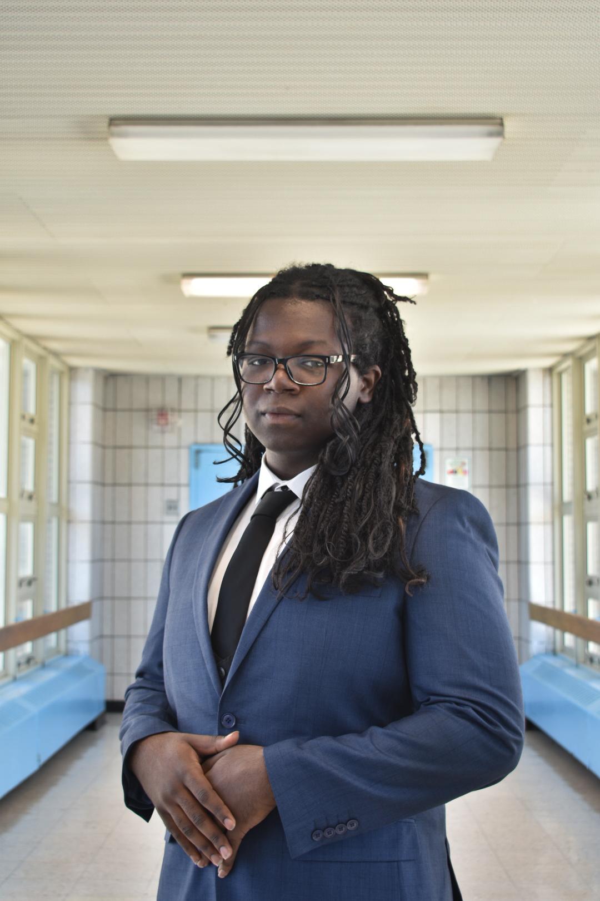
Justin is honored to serve as the Secretary-General of InventMUN. He was born and raised in Queens, NY, with African American and Nigerian heritage. While currently enrolled in the Graphic Design program, he plans to become a Philosophy major on the Pre-Law track to be an attorney in the future. Model UN has always been something he wanted to do since middle school because of his passion for social advocacy and cultural analysis, but Edison's MUN team amplified that. He is an independent musician and spends most of his time writing for other artists. In his spare time, he also likes to photograph, and he’s been working on a novel for 2 years now. He enjoys how normal it is to be different here. “When you walk the halls, you see students with vast displays of expression. We get to be whatever we choose and that is represented throughout our entire school's motto. From experimental fashion on a regular Tuesday and alternative clubs to underground musician networks, the agency and atmosphere of the school is in the students' hands, and he thinks that teaches all of us how to make our own decisions and find our own path.”
Oversees all aspects of the conference and ensures a professional,
engaging, and educational experience for all delegates.
Deputy Secretary General
Elissa Canas
elissacanas.inventmun@gmail.com
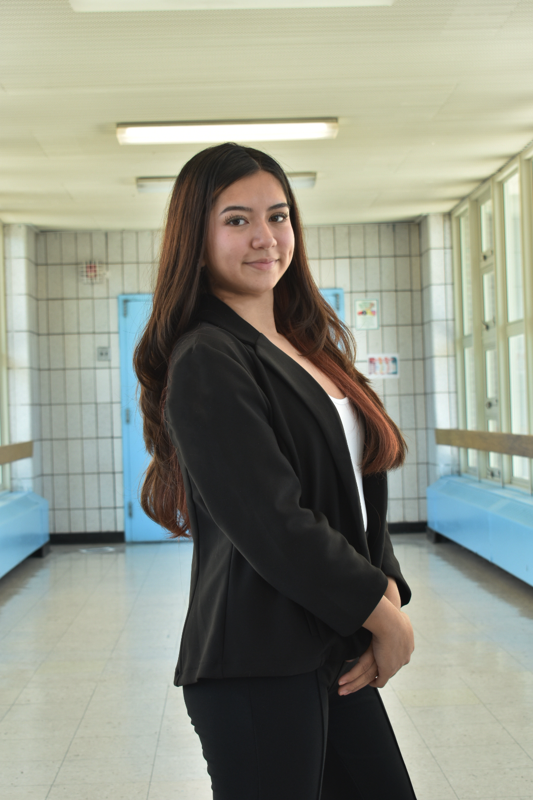
Elissa is honored to serve as the Deputy Secretary-General of InventMun. She was born and raised in Queens NY with Portuguese and Salvadoran heritage. While currently enrolled in the Graphic Design program, she plans on going into Elementary Education for college. Elissa joined MUN because she wanted to expand her knowledge on current events around the world. Elissa played varsity soccer for the past 4 years & became captain in her senior year. She believes that Thomas A. Edison has multiple communities in one, making every student feel like they have a place in our school.
Acts as a top-tier organizer, supporting the Secretary-General (SG) to
ensure the conference runs smoothly.
Chief Of Staff
Winifred Odikagbue
winifredo2@nycstudents.net
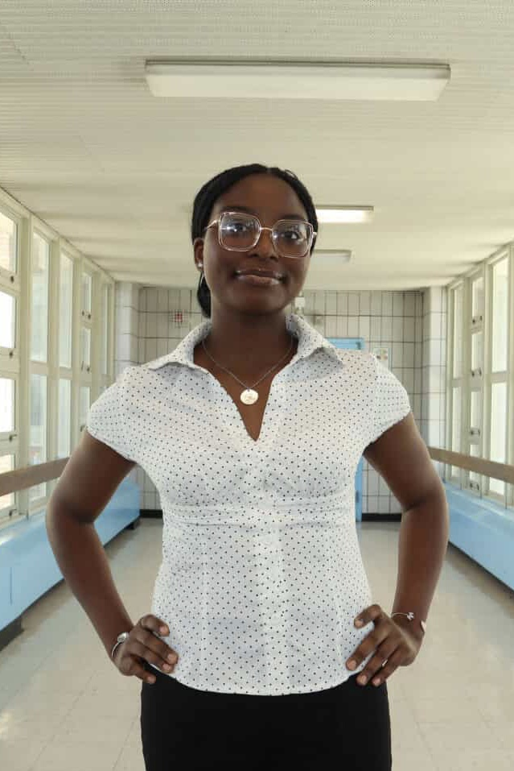
Winnie is honored to serve as the Chief of Staff of InventMun. She is Nigerian American and is enrolled in the Electrical Installation program, and she plans on majoring in Biology for her college major. She is very optimistic when it comes to voicing my opinions, and she enjoys engaging in valuable debate, especially when it involves topics that affect and will affect my generation in the long run. She believes MUN exposes younger generations to the real world, and allows them to experience the world through the lens of a leader. She is involved in Anime Club, Student designers club, Intern at CCM, National honor society, volunteering at her local community garden, and JROTC. She enjoys the sense of community you feel anywhere you go in the school. She feels like no matter your background, and your identity, you will always be able to make friends, join clubs, and establish meaningful friendships with other students at this school!
Acts as a strategic adviser, "right hand," and air traffic controller for
a CEO or senior leader, managing high-level projects, filtering information,
and improving organizational efficiency.
Deputy Chief Of Staff
Jada Shackleford
jadas180@nycstudents.net
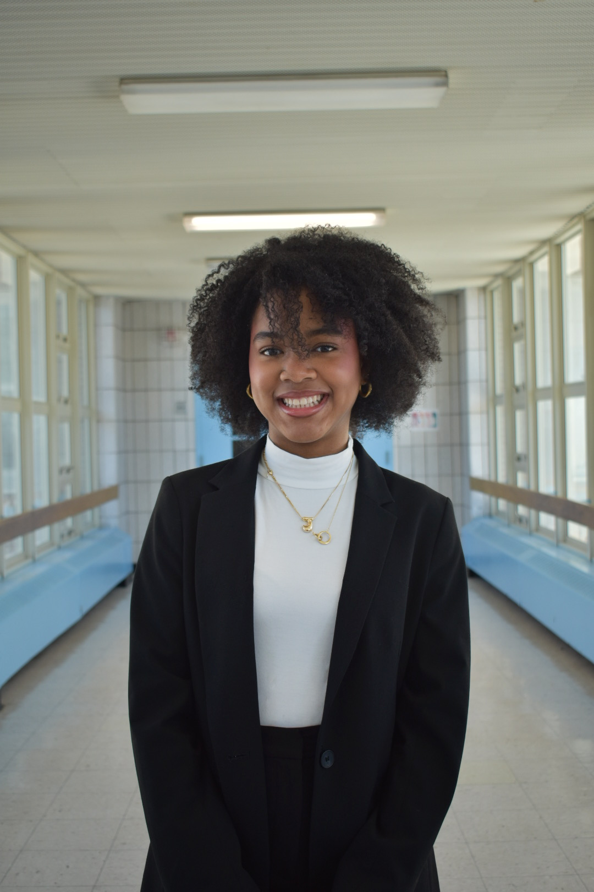
Acts as the second-in-command, managing daily operations,
implementing strategic plans, and supervising staff to support a top leader.
Press General
Leah Small
leahs113@nycstudents.net
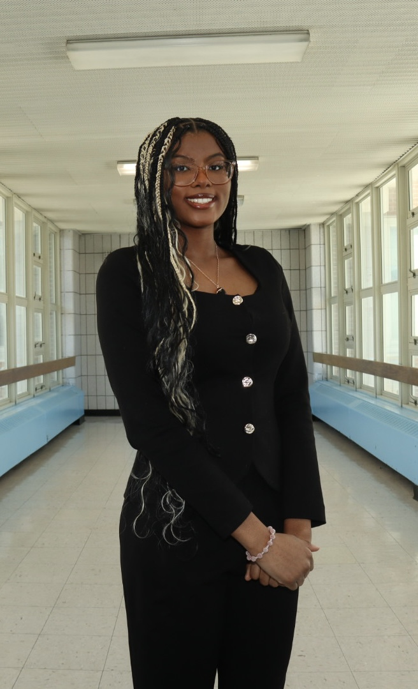
Acts as the media team, covering, reporting on, and analyzing the
proceedings of various committees.
Director General Of Committees
Rihanna Qiu
rihannaq2@nycstudents.net
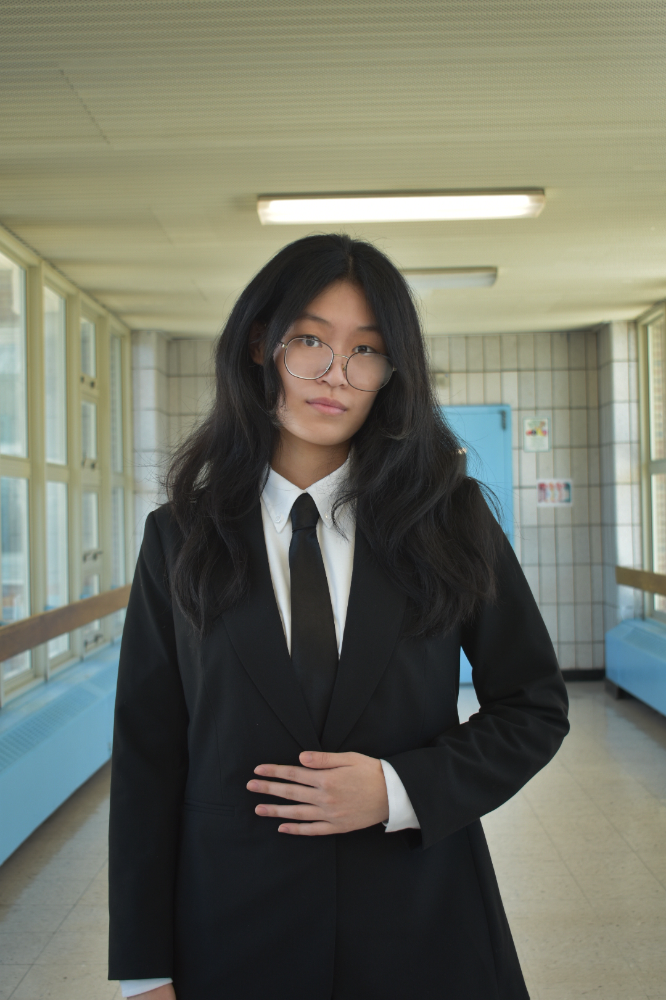
Oversees the substantive and logistical operations of
the General Assembly committees.
USG Of Delegate Affairs
Aiyana Acosta
aiyanaa4@nycstudents.net
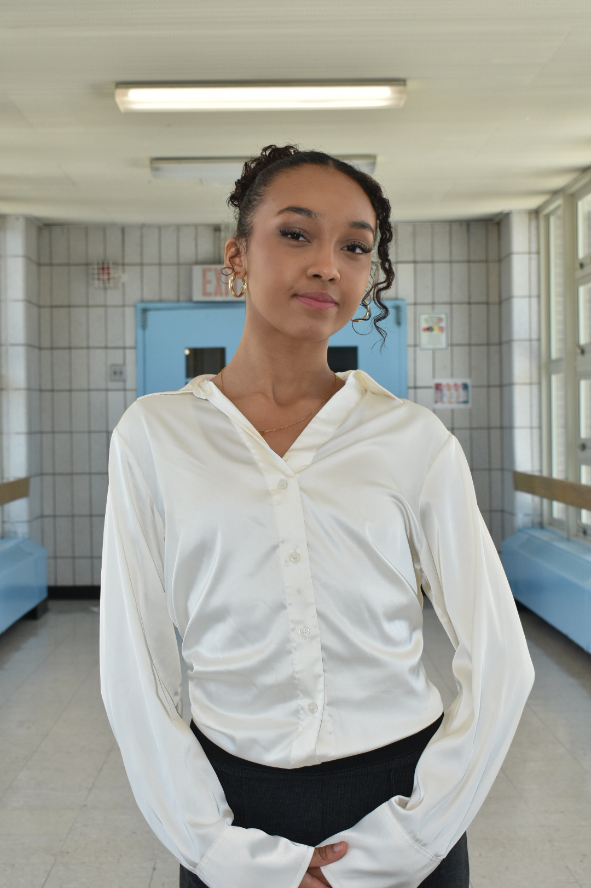
Managing the entire delegate experience,
from initial registration to on-site support.
ASG Of Delegate Affairs
Nicole Leonardo
nicolel228@nycstudents.net

Managing the entire delegate experience,
from initial registration to on-site support.
USG OF Technology
Chalantica Roy
chalanticar@nycstudents.net
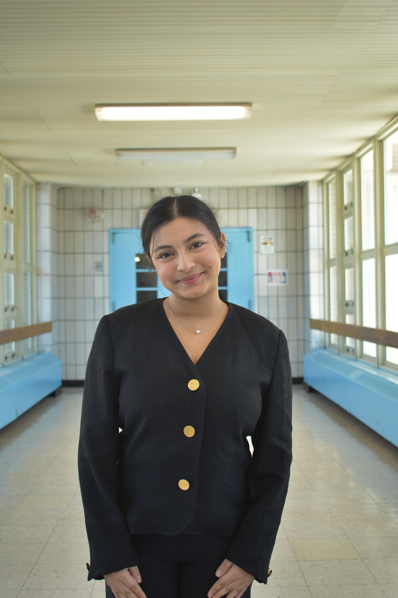
Manages all technical devices and the technology
throughout the conference.
Delegate/Chair Trainer
Jordan Chapman
jordanc276@nycstudents.net
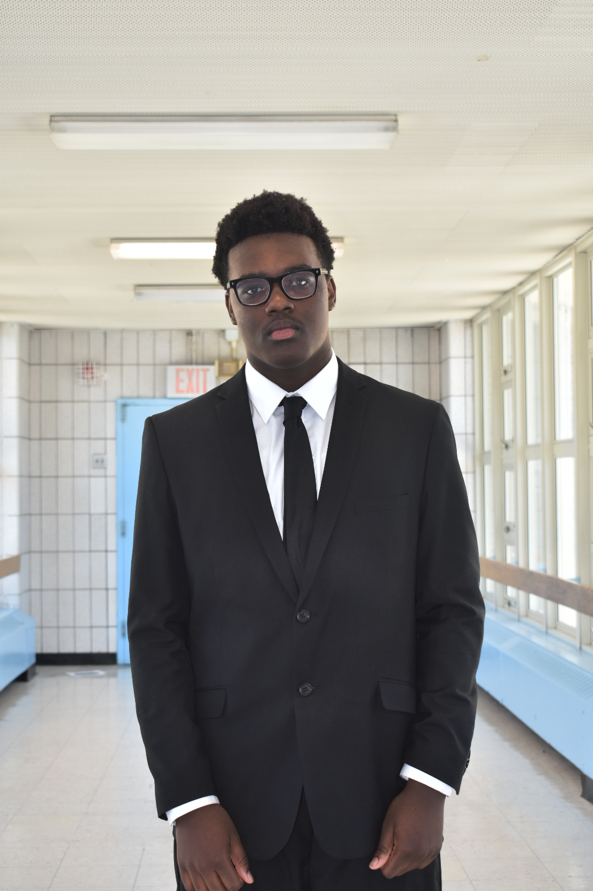
Prepares students to excel by conducting skill labs,
organizing mock debates, and teaching parliamentary procedures.
USG Of Marketing And Outreach
Yoselin Cortes Hernandez
yoselinc9@nycstudents.net
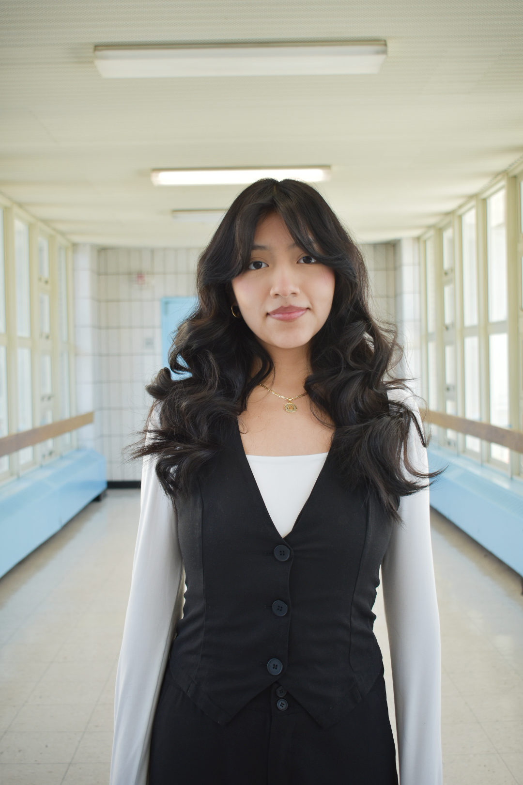
Responsible for promoting the event, increasing visibility,
managing social media, and securing partnerships.
USG Of Finance
Luis Garcia
luisgarcia.inventmun@gmail.com

Manages the event's budget, tracks expenses,
and secures sponsorships or funding.
USG Of Workshops
Jayron Salazar
jayrons@nycstudents.net
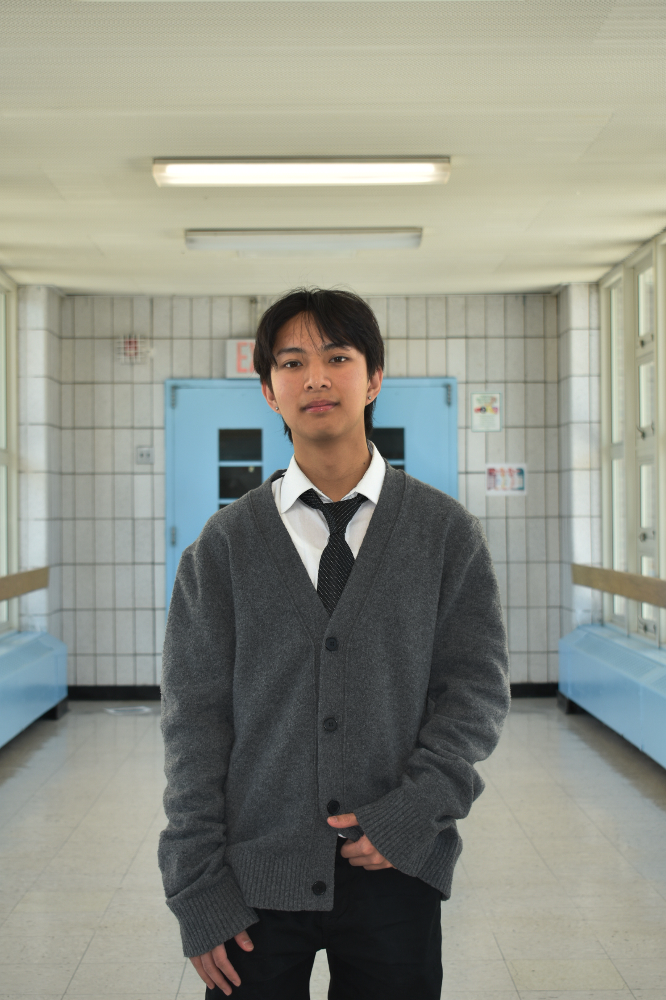
Responsible for developing, organizing, and executing training sessions,
workshops, and educational materials for delegates and staff.
Director Of Crisis
Ivy Polanco
ivyp8@nycstudents.net
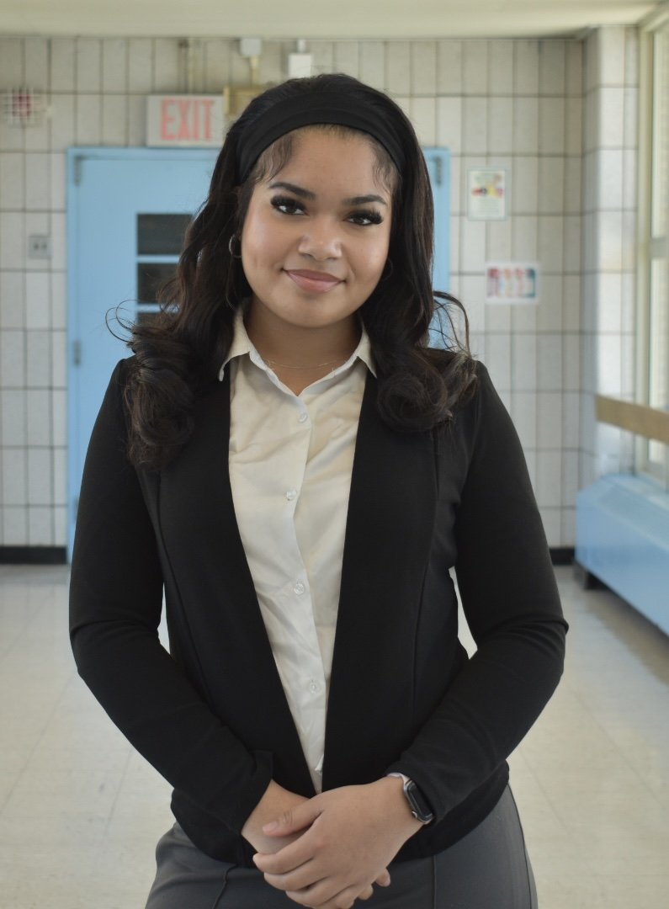
Manages the "backroom," controlling the flow, narrative,
and updates of a crisis committee.
Director Of General Assembly
Kassandra Done
kassandrad21@nycstudents.net
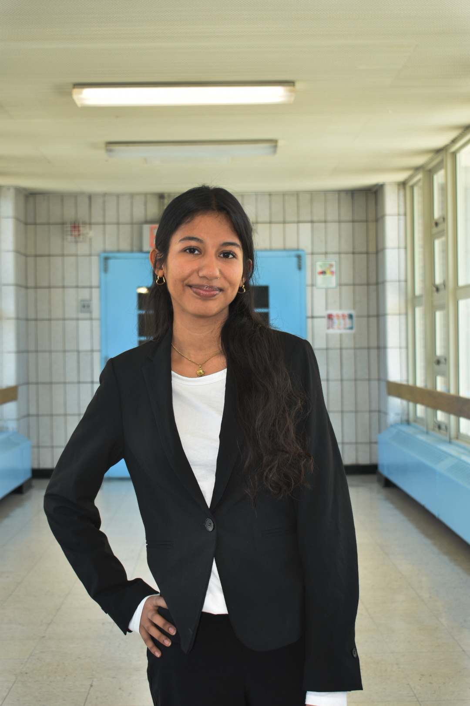
Oversees the largest committees, ensuring smooth, realistic
simulations of international diplomacy for over 150 delegates.
USG Of Design
Jessica Velazquez
jessicav174@nycstudents.net
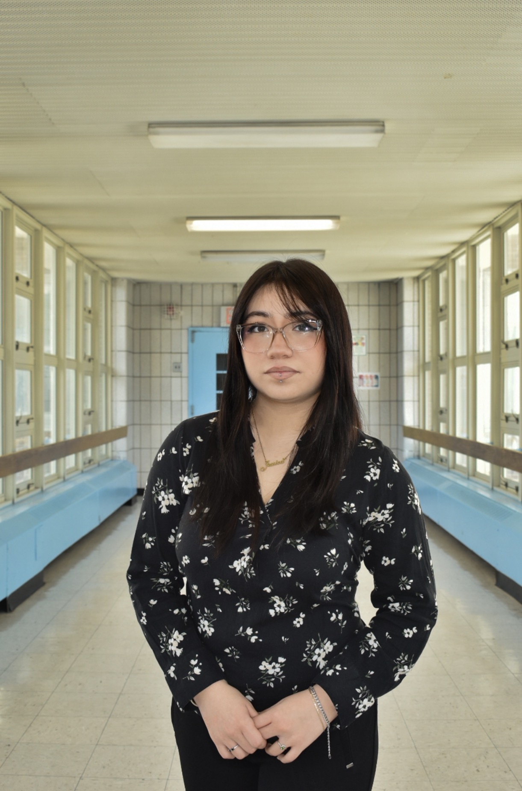
Creative lead responsible for the visual identity,
branding,and aesthetic aspects of the event.